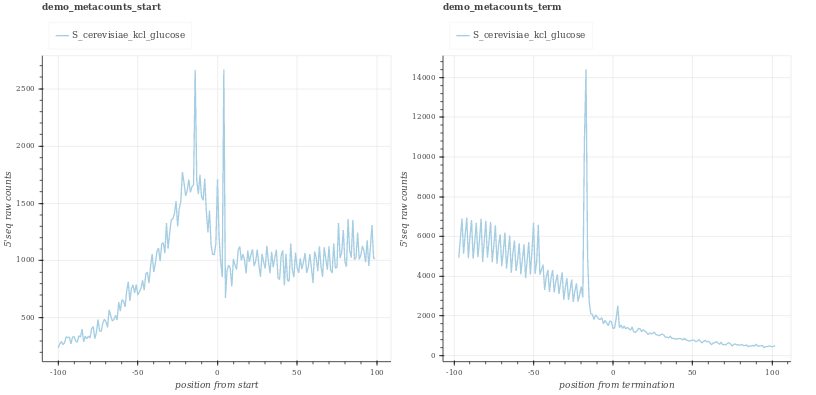
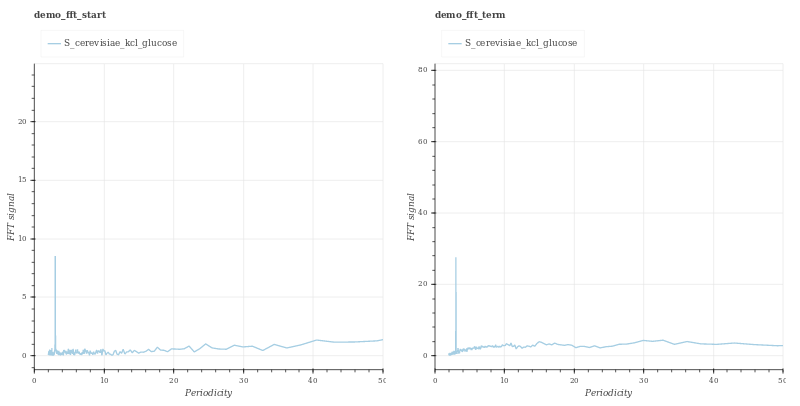
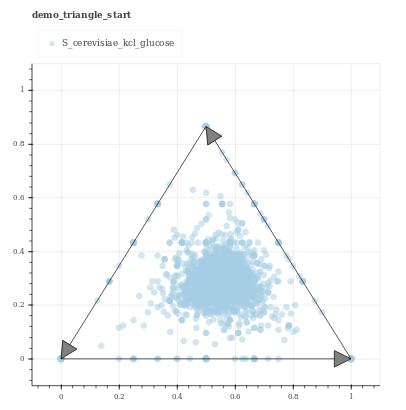
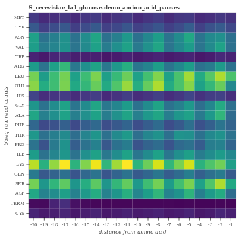

Output interpretation¶
Plotting¶
Description of output plots
Metacounts
Plots showcasing coverage upstream of TSS and TTS
Fourier transform periodicity plots
Triangle plots
Amino-acid pause heatmap
Statistics¶
Output statistics are saved in plain text file and can be provide additional information
More descriptions to be added